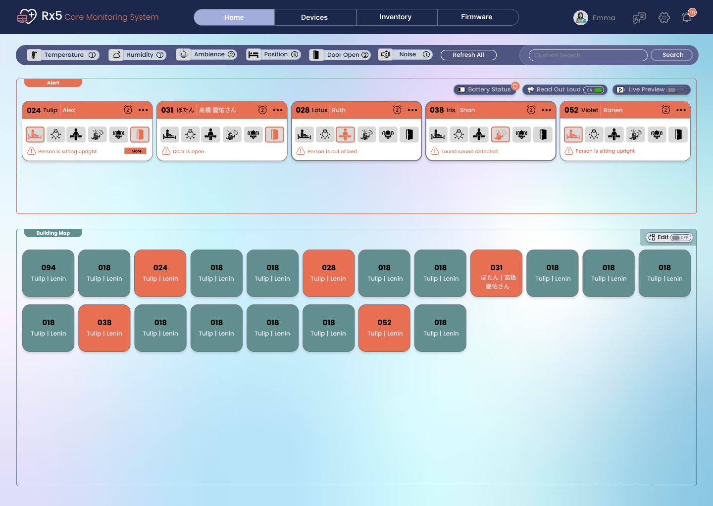
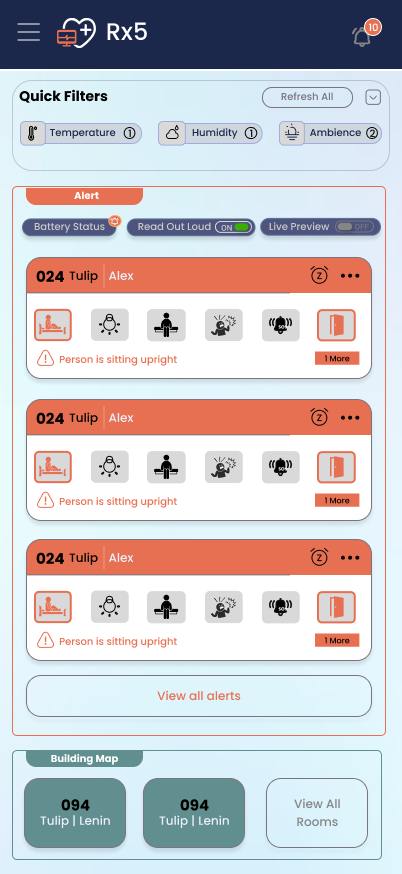

Fragmented signals
Different sensors communicate different conditions. Without a shared view, it is harder to interpret those signals together.
Designing a connected monitoring experience that brings patient signals, room context and device operations into one clear system.
Explore the case study ↓

THE PRODUCT
RX5 is a connected care monitoring platform that brings together sensor readings, patient-related events and room conditions so care teams can understand what is happening and where attention may be needed.
The system connects monitoring signals—including patient position, temperature, humidity, ambience, noise, door status and SOS-related events—with the patient, room and device information needed for follow-up. Its web experience supports operational oversight and administration; the mobile experience makes essential workflows accessible in a compact format.
The design challenge: turn a complex ecosystem of sensors, devices, rooms and alerts into a coherent operational experience.
PROBLEM SPACE
The challenge was not simply displaying more data. It was helping different users interpret it, locate its source and move to the right next step.
Different sensors communicate different conditions. Without a shared view, it is harder to interpret those signals together.
Events such as a patient being out of bed, a door being open or unusual noise need to be visible and understandable.
Device registration, room assignments, nursing stations, extensions and firmware create a second layer of work.
Users need to move from a monitoring overview to a patient or device record without losing the relationship between them.
Help care teams understand monitoring signals, identify the associated patient or room, and manage connected devices through one consistent experience?
UNDERSTANDING THE CARE ENVIRONMENT
The design is informed by elderly-care workflows and published healthcare research on patient monitoring, falls and alarm fatigue.
I structured the experience around the needs of nurses monitoring patient events, facility teams managing rooms and nursing stations, and technical administrators responsible for connected devices.
BASED ON THE PRODUCT ROLES AND WORKFLOWSI brought the main workflows together across Home, patient details, Devices, Inventory, room setup and Firmware, keeping urgent monitoring tasks separate from day-to-day administration.
WEB + MOBILE EXPERIENCEPublished research highlights two important design risks: falls among older adults and alarm fatigue in clinical environments. These findings shaped the focus on clear alerts, visible status and reliable feedback.
SECONDARY RESEARCH · SOURCES BELOWCDC research reports that around 1 in 4 US adults aged 65 and older experiences a fall each year.
The Joint Commission has reported that a high proportion of clinical alarm signals may not require intervention, contributing to alarm fatigue.
A connected experience for monitoring, patient details and device administration across both platforms.
These findings describe wider healthcare challenges and informed the design priorities for RX5. They are not product-performance results.
MAIN USER ROLES
I designed the experience around the responsibilities of each user group.
Monitors patient conditions and follows up on relevant events.
Maintains rooms, nursing stations and assigned devices.
Maintains device connectivity and software versions.
FROM ALERT TO ACTION
A sensor state or alert card surfaces a monitored condition.
Alert card · Sensor indicatorUse patient and room identifiers or the building map to understand where it is associated.
Patient ID · Room mapOpen patient information, sensor states, alerts and relevant activity comments.
Details · Live · AlertsFollow facility procedures or investigate device and configuration issues.
Device · Inventory · FirmwareThe monitoring system supports staff decisions. It does not replace clinical judgement or facility procedures.
HOW THE APP IS ORGANIZED
The architecture separates high-frequency monitoring from device administration and maintenance, while keeping related workflows accessible.
THE PRODUCT IN USE
The following screens are from the RX5 product mockups. Each view is paired with the UX intent behind its structure.
Brings sensor filters, patient alert cards and room-level context into one operational view. The dashboard is designed to support fast scanning before users move into a more detailed record.
A focused patient record connects identifiers and assigned hardware with live sensor states, alerts and activity comments.
A structured registry makes connected hardware easier to review by aligning device IDs, room numbers, captured data, last-updated information, status and actions.
Inventory groups device lists, rooms, nursing stations and mobile extensions into related administrative tasks.
The configuration workflow links base units, room extensions, nursing stations and associated mobile, door and floor units.
Manual entry and QR-code scanning provide two paths for adding a device to the connected ecosystem.
The firmware workspace compares installed and available hardware/software versions and provides individual or bulk update actions.
RESPONSIVE BY INTENT
The mobile app is not simply a compressed desktop layout. It reorganizes dense information into vertical cards, compact navigation and focused task views.
CHECKING THE EXPERIENCE
I evaluated the interface against established usability principles and accessibility considerations, focusing on the clarity of alerts, visibility of system status, error prevention and ease of use.
The review focused on alert clarity, status visibility, clear actions, error prevention and mobile usability. The most important opportunities are listed below.
Several alerts use the same orange card style. Add a clear priority level and sorting logic.
Use text labels or icons as well as colour to show alert and map status.
The device list uses action icons without text labels. Add clear names or tooltips.
A red status indicator should explain whether a device is offline, failed or reporting old data.
Bring the last-updated time closer to alert and patient information so old readings are not mistaken for current ones.
Show how many devices will be updated, ask for confirmation and display progress or errors.
When adding a device by QR code, show whether the scanner is connected and how to recover if it fails.
Make it clear whether Normal and Critical are status labels or controls users can change.
Review the mobile filter set so important position, door and noise events are not difficult to find.
Check small icons and touch targets against accessibility guidance.
Use consistent wording for Configure Device wherever the task appears.
Align the patient detail tabs so the navigation matches across the information architecture and the product screen.
WHAT THE DESIGN BRINGS TOGETHER
Monitoring signals, patient alerts and room context are brought together in a single dashboard.
Patient details expose the identifiers and extensions connecting people, rooms and hardware.
Device lists, room setup, onboarding and firmware have dedicated workflows.
Core workspaces are adapted for desktop oversight and mobile access.
They need consistent state semantics, meaningful context, careful responsive prioritization and clear recovery paths. RX5 reinforced the importance of designing the complete operational ecosystem—not only the screens users see first.
RX5 CARE MONITORING SYSTEM
Lead Product Designer · Web + Mobile · Healthcare Technology